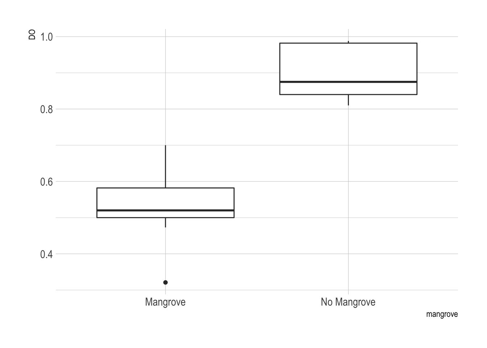
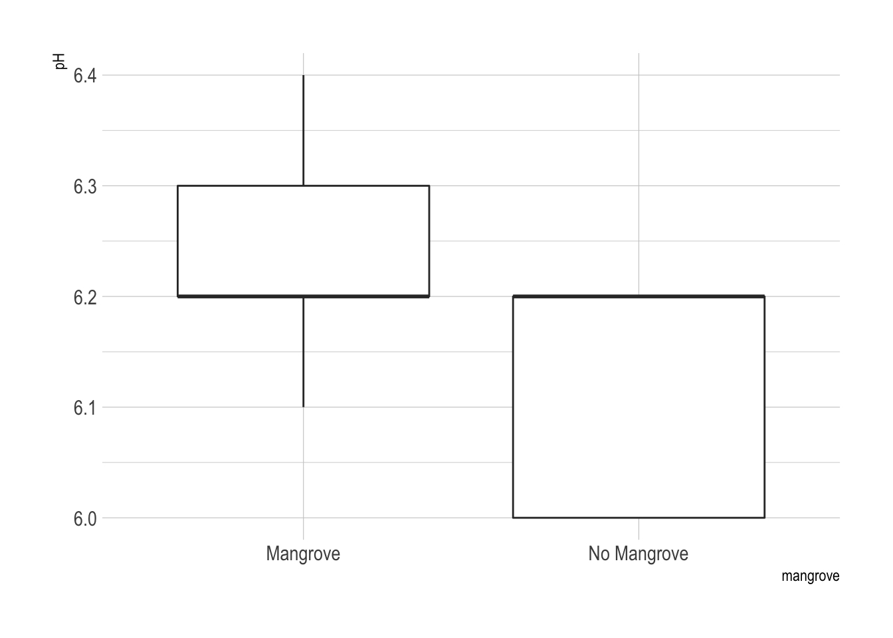
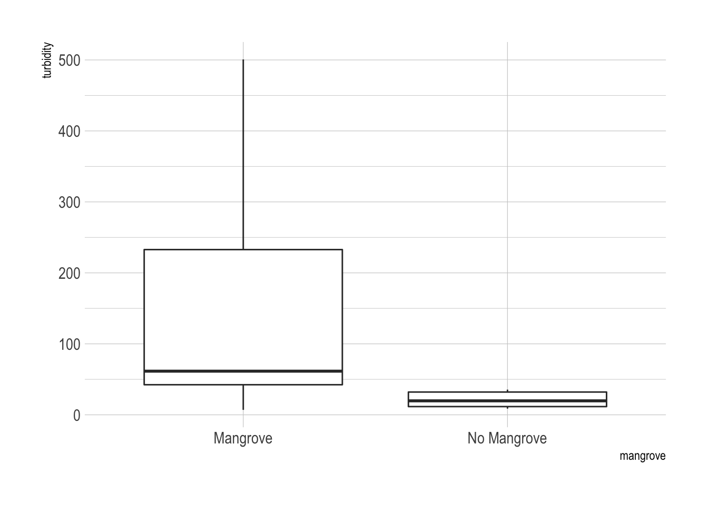
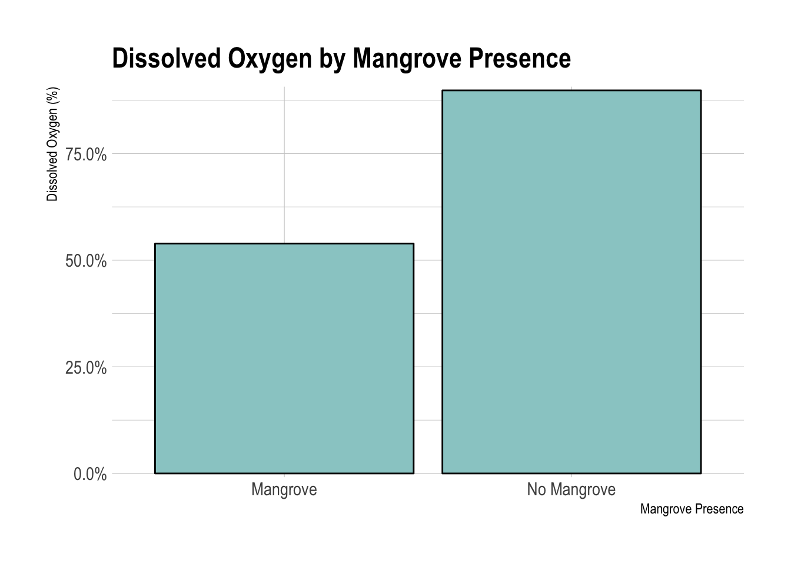
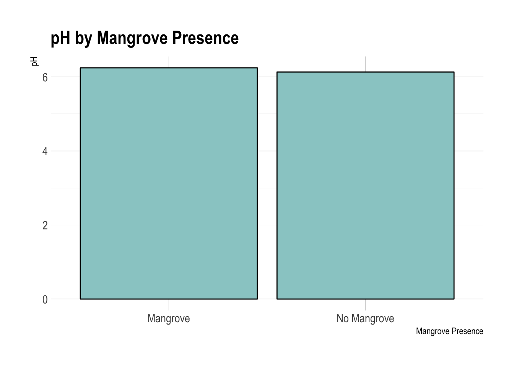
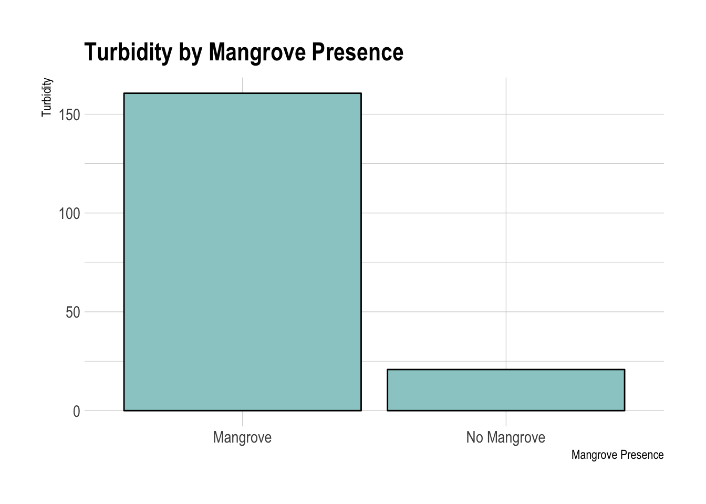

My daughter started doing a science project on the ecology of the Heeia fishpond. She collected a bunch of data, but since she’s only a 5th grader, I thought she might need some help with the analysis.
The premise is that the fishpond has been overgrown by invasive mangrove plants. The organization that runs the fishpond has been clearing back the mangroves. This helps to restore the water in the pond. What these effects are were not clear, but she hypothesized that there would be less mud since the mangroves trap mud. There would also be better oxygenation since there is less bacteria and dirt in the water. Finally the water would be clearer because the mud does not settle between the tree branches and roots once these have been cleared out.
Methods
She and her teammate sampled water from an area that had been cleared months ago and an area that still had mangroves near it. They collected data on the dissolved oxygen content, pH, and turbidity of the water.
To analyze the data we ran two-sided t-tests, comparing dissolved oxygen, pH, and turbidity at the two sites. To compensate for the clustered data collection (3 data collection days, each about a week apart), I also put the data into a multivariable linear regression model, with the date of collection as a separate variable.
Results
Here’s the raw data.
library(googlesheets)
suppressPackageStartupMessages(library(dplyr))
library(ggplot2)
library(hrbrthemes)## NOTE: Either Arial Narrow or Roboto Condensed fonts are required to use these themes.## Please use hrbrthemes::import_roboto_condensed() to install Roboto Condensed and## if Arial Narrow is not on your system, please see http://bit.ly/arialnarrow# Change cache flag to F if updating data
my_sheets <- gs_ls()
fb <- gs_title("heeia")## Sheet successfully identified: "heeia"x <- gs_read(fb)## Accessing worksheet titled 'Sheet1'.## Parsed with column specification:
## cols(
## coll_date = col_date(format = ""),
## ID = col_double(),
## mangrove = col_logical(),
## DO = col_double(),
## pH = col_double(),
## turbidity = col_double()
## )x <- as_tibble(x)
x## # A tibble: 18 x 6
## coll_date ID mangrove DO pH turbidity
## <date> <dbl> <lgl> <dbl> <dbl> <dbl>
## 1 2019-02-23 1 FALSE 0.851 6.2 32.1
## 2 2019-02-23 2 FALSE 0.829 6.2 12
## 3 2019-02-23 3 FALSE 0.92 6 11.6
## 4 2019-02-23 4 TRUE 0.473 6.4 146.
## 5 2019-02-23 5 TRUE 0.52 6.3 31.3
## 6 2019-02-23 6 TRUE 0.582 6.3 233.
## 7 2019-03-09 7 FALSE 0.988 6 32.4
## 8 2019-03-09 8 FALSE 0.982 6.2 35.5
## 9 2019-03-09 9 FALSE 0.988 6.2 26
## 10 2019-03-09 10 TRUE 0.7 6.2 7
## 11 2019-03-09 11 TRUE 0.5 6.2 42.4
## 12 2019-03-09 12 TRUE 0.678 6.3 61.5
## 13 2019-03-15 13 FALSE 0.84 6.2 9.2
## 14 2019-03-15 14 FALSE 0.81 6 19.7
## 15 2019-03-15 15 FALSE 0.875 6.2 8.7
## 16 2019-03-15 16 TRUE 0.321 6.2 57.5
## 17 2019-03-15 17 TRUE 0.565 6.1 366
## 18 2019-03-15 18 TRUE 0.511 6.2 501.Description of Mean Dissolved Oxygen, pH, and Turbidity by Mangrove Presence
obs <- 9
x %>% group_by(mangrove) %>%
summarize(mean.DO = mean(DO),
se.DO = sd(DO)/sqrt(obs),
mean.pH = mean(pH),
se.pH = sd(pH)/sqrt(obs),
mean.turbidity = mean(turbidity),
se.turbidity = sd(turbidity)/sqrt(obs))## # A tibble: 2 x 7
## mangrove mean.DO se.DO mean.pH se.pH mean.turbidity se.turbidity
## <lgl> <dbl> <dbl> <dbl> <dbl> <dbl> <dbl>
## 1 FALSE 0.898 0.0243 6.13 0.0333 20.8 3.63
## 2 TRUE 0.539 0.0377 6.24 0.0294 161. 57.5The data do not appear to be normally distributed from looking at these boxplots.
ggplot(x, aes(x = mangrove, y = DO)) + geom_boxplot() + theme_ipsum()
ggplot(x, aes(x = mangrove, y = pH)) + geom_boxplot() + theme_ipsum()
ggplot(x, aes(x = mangrove, y = turbidity)) + geom_boxplot() + theme_ipsum()
Dissolved Oxygen by Mangrove Presence
There seemed to be more dissolved oxygen in the mangrove-free areas. This difference was highly significant based on a two-sided t-test. I also tried a non-parametric test (Wilcoxon rank-sum test) to avoid making the assumption of normality.
t.test(x$DO ~ x$mangrove)##
## Welch Two Sample t-test
##
## data: x$DO by x$mangrove
## t = 8.0141, df = 13.654, p-value = 1.586e-06
## alternative hypothesis: true difference in means is not equal to 0
## 95 percent confidence interval:
## 0.2628558 0.4555887
## sample estimates:
## mean in group FALSE mean in group TRUE
## 0.8981111 0.5388889wilcox.test(x$DO ~ x$mangrove)## Warning in wilcox.test.default(x = c(0.851, 0.829, 0.92, 0.988, 0.982,
## 0.988, : cannot compute exact p-value with ties##
## Wilcoxon rank sum test with continuity correction
##
## data: x$DO by x$mangrove
## W = 81, p-value = 0.0004095
## alternative hypothesis: true location shift is not equal to 0x %>% group_by(mangrove) %>% summarize(
mean.DO = mean(DO),
se.DO = sd(DO)/sqrt(obs)
) %>%
ggplot(aes(x = mangrove, y = mean.DO)) +
geom_bar(stat='identity',
color = "black",
fill = "#99cccc"
) +
geom_errorbar(aes(ymin = mean.DO - se.DO, ymax = mean.DO + se.DO),
width = 0.2,
position=position_dodge(0.9)) +
ggtitle("Dissolved Oxygen by Mangrove Presence") +
xlab("Mangrove Presence") +
ylab("Dissolved Oxygen (%)") +
theme_ipsum() +
scale_y_percent()
pH by Mangrove Presence
Water pH was marginally different between the mangrove-free and mangrove containing areas. However the difference was still statistically significant. Water in the mangrove free areas was slightly more acidic than in the mangrove containing areas.
t.test(x$pH ~ x$mangrove)##
## Welch Two Sample t-test
##
## data: x$pH by x$mangrove
## t = -2.5, df = 15.754, p-value = 0.02387
## alternative hypothesis: true difference in means is not equal to 0
## 95 percent confidence interval:
## -0.20544891 -0.01677331
## sample estimates:
## mean in group FALSE mean in group TRUE
## 6.133333 6.244444wilcox.test(x$pH ~ x$mangrove)## Warning in wilcox.test.default(x = c(6.2, 6.2, 6, 6, 6.2, 6.2, 6.2, 6, 6.2:
## cannot compute exact p-value with ties##
## Wilcoxon rank sum test with continuity correction
##
## data: x$pH by x$mangrove
## W = 18, p-value = 0.03208
## alternative hypothesis: true location shift is not equal to 0x %>% group_by(mangrove) %>%
summarize(
mean.pH = mean(pH),
se.pH = sd(pH)/sqrt(obs)
) %>%
ggplot(aes(x = mangrove, y = mean.pH)) +
geom_bar(stat='identity',
color = "black",
fill = "#99cccc") +
geom_errorbar(aes(ymin = mean.pH - se.pH, ymax = mean.pH + se.pH),
width = 0.2,
position=position_dodge(0.9)) +
ggtitle("pH by Mangrove Presence") +
xlab("Mangrove Presence") +
ylab("pH") +
theme_ipsum()
Turbidity by Mangrove Presence
There was a significant difference in turbidity between the two areas. The mangrove free areas had very little turbidity while the mangrove containing areas were very clearly more turbid.
t.test(x$turbidity ~ x$mangrove)##
## Welch Two Sample t-test
##
## data: x$turbidity by x$mangrove
## t = -2.4267, df = 8.0638, p-value = 0.04119
## alternative hypothesis: true difference in means is not equal to 0
## 95 percent confidence interval:
## -272.465627 -7.134373
## sample estimates:
## mean in group FALSE mean in group TRUE
## 20.8 160.6wilcox.test(x$turbidity ~ x$mangrove)##
## Wilcoxon rank sum test
##
## data: x$turbidity by x$mangrove
## W = 12, p-value = 0.01061
## alternative hypothesis: true location shift is not equal to 0x %>% group_by(mangrove) %>% summarize(
mean.turbidity = mean(turbidity),
se.turbidity = sd(turbidity)/sqrt(obs)
) %>%
ggplot(aes(x = mangrove, y = mean.turbidity)) +
geom_bar(stat='identity',
color = "black",
fill = "#99cccc") +
geom_errorbar(aes(ymin = mean.turbidity - se.turbidity,
ymax = mean.turbidity + se.turbidity),
width = 0.2,
position=position_dodge(0.9)) +
ggtitle("Turbidity by Mangrove Presence") +
xlab("Mangrove Presence") +
ylab("Turbidity") +
theme_ipsum()
Multivariable Model for Dissolved Oxygen
Including date and mangrove as predictor variables, there was still a significant effect of the mangrove presence. The March 9, 2019 collection date had significantly more dissolved oxygen than the February 23 date.
model1 <- lm(x$DO ~ x$mangrove + as.factor(x$coll_date))
summary(model1)##
## Call:
## lm(formula = x$DO ~ x$mangrove + as.factor(x$coll_date))
##
## Residuals:
## Min 1Q Median 3Q Max
## -0.153056 -0.024153 0.003083 0.043847 0.090944
##
## Coefficients:
## Estimate Std. Error t value Pr(>|t|)
## (Intercept) 0.87544 0.03343 26.18 2.71e-13 ***
## x$mangroveTRUE -0.35922 0.03343 -10.74 3.81e-08 ***
## as.factor(x$coll_date)2019-03-09 0.11017 0.04095 2.69 0.0176 *
## as.factor(x$coll_date)2019-03-15 -0.04217 0.04095 -1.03 0.3206
## ---
## Signif. codes: 0 '***' 0.001 '**' 0.01 '*' 0.05 '.' 0.1 ' ' 1
##
## Residual standard error: 0.07092 on 14 degrees of freedom
## Multiple R-squared: 0.9029, Adjusted R-squared: 0.8821
## F-statistic: 43.4 on 3 and 14 DF, p-value: 2.443e-07Discussion
I will leave the discussion up to my daughter and her teammate to figure out.